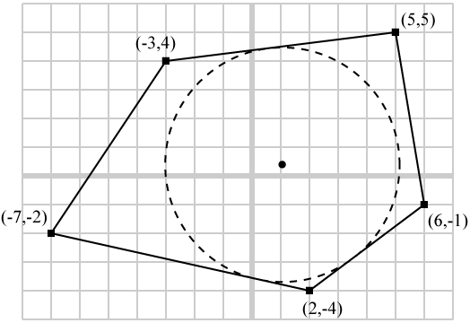

Problem E - New Marketing Plan
You work at a company that produces circular plates. In a meeting, your boss announces a new marketing plan - the company will package the plates in specially shaped containers, so as to attract customers' attention. The specially shaped containers will always be convex polygon. The existing packaging software can easily compute the maximum plate size for a given container size, but unfortunately, it can only do so for rectangular containers. Therefore, your boss asks you to write a program that can compute the maximum plate size given the container's shape.

The above figure shows a maximum plate placed inside a convex-polygon-shaped container.
Given the shape of a container, you need to compute the radius of the largest possible plate which can be fitted inside the container?
Input
Input consists of multiple problem instances. Each instance begins with a single positive integer n, where 3 ≤ n ≤ 50. It is followed by 2n integers, x1, y1, x2, y2, ..., xn, yn, where -1000 ≤ xi, yi ≤ 1000 for all i. They indicate the shape of a container which is a simple convex polygon with n vertices (x1, y1), (x2, y2), ..., (xn, yn) in counter-clockwise order. The area of the polygon is guaranteed to be positive and no three consecutive vertices are collinear. The input data is terminated by an n being 0. There will not be more than 100 test cases.
Output
For each test case, print out the radius of the largest possible plate which can be fitted inside the input container. The answer should be printed with 3 digits after the decimal point in a single line.
Sample input
5
5 5 -3 4 -7 -2 2 -4 6 -1
3
0 0 10 0 0 10
0
Sample output
4.082
2.929
Problem setter: Cho
Special thanks: Michael (for making up the story)
Source: Tsinghua-HKUST Programming Contest 2007